Op uw gemak bij de
tandarts in Hardenberg.
Een klantgerichte praktijk met het keurmerk De Lieve Tandarts. Nieuwe patiënten zijn welkom.
Alle zorg voor uw gebit, onder één dak in Hardenberg.
Bij Tandartspraktijk Badhuisplein kunt u terecht voor alle voorkomende tandheelkundige behandelingen, esthetische tandheelkunde, orthodontie en implantologie. Preventie neemt daarbij een centrale plaats in.
Tandartsen, preventieassistentes, tandprothetici en een tandtechnieker werken hier nauw samen. Een 3D-scan maken we zelf, een normale kroon is meestal dezelfde dag klaar en uw prothese repareren we in ons eigen laboratorium.
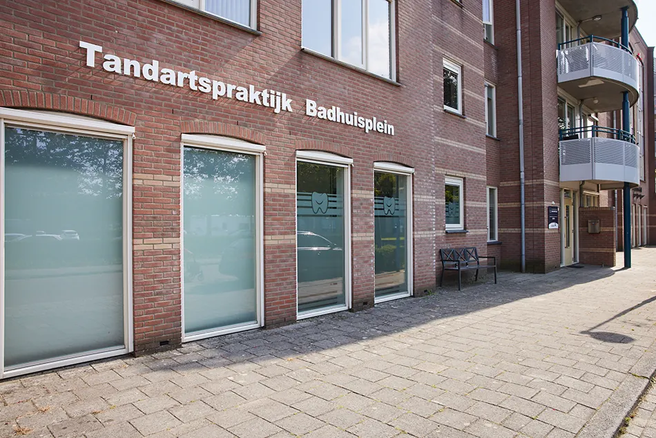
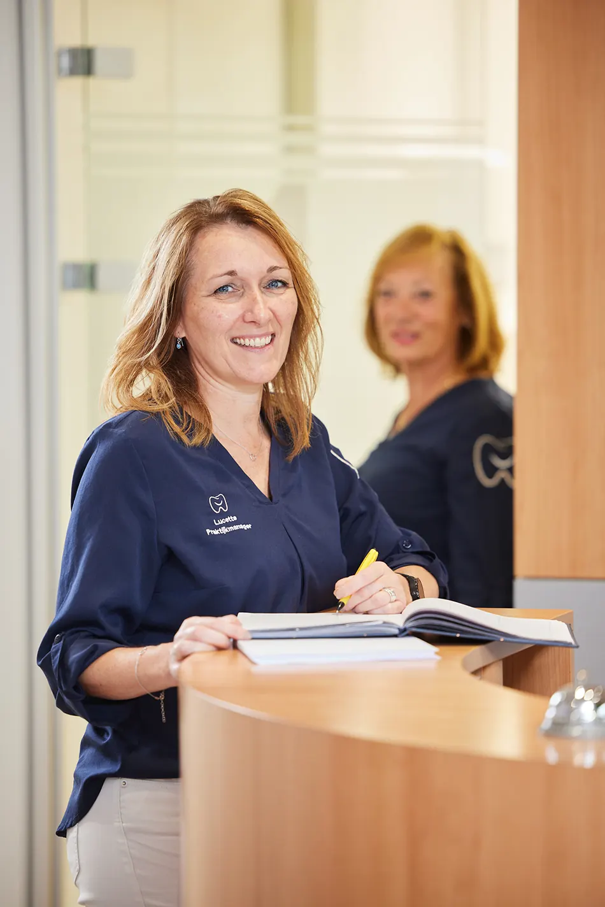
Extra aandacht voor wie het spannend vindt, en voor kinderen.
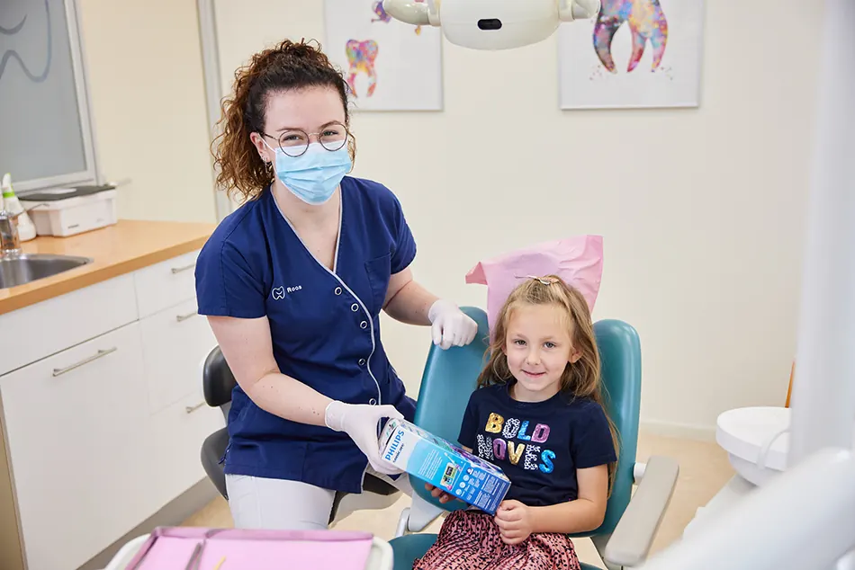
Kinderen en de tandarts
Vanaf twee jaar mag uw kind mee om rustig te wennen. Alles is vrijblijvend: lukt het niet, dan een volgende keer beter.
Tips voor oudersLaat ons weten hoe we u het beste kunnen helpen.
Sinds 2018 hebben we het keurmerk De Lieve Tandarts, als eerste praktijk in Overijssel. We plannen zo nodig extra tijd in en leggen uit wat we doen. Ook lachgas en narcose zijn mogelijk.
Over De Lieve Tandarts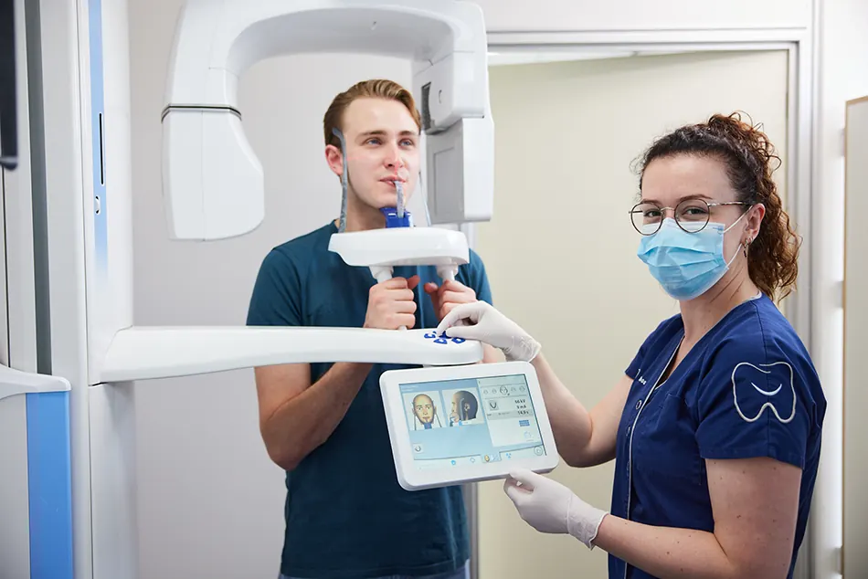
3D CBCT-scan in huis
Minder straling dan een normale CT-scan en direct een betrouwbaar 3D-beeld. Ook voor verwijzende behandelaars.
Over de CBCT-scan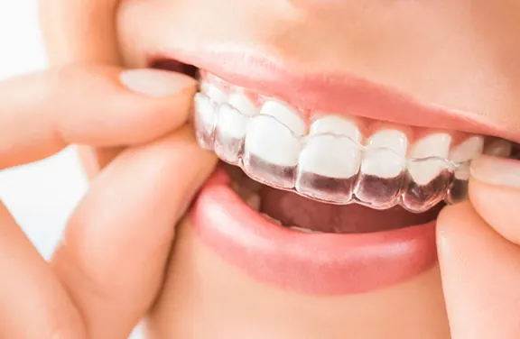
Invisalign, Spark of brackets
Onzichtbare aligners of een vaste beugel: tijdens een gratis intake kijken we wat bij u past.
Meer over orthodontieOns team
Negentien collega’s die elke dag klaarstaan voor uw mondgezondheid, van de balie tot het laboratorium.
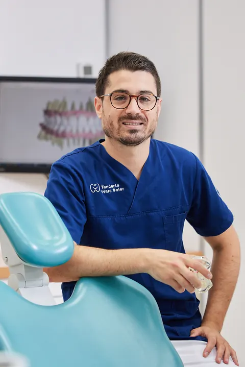
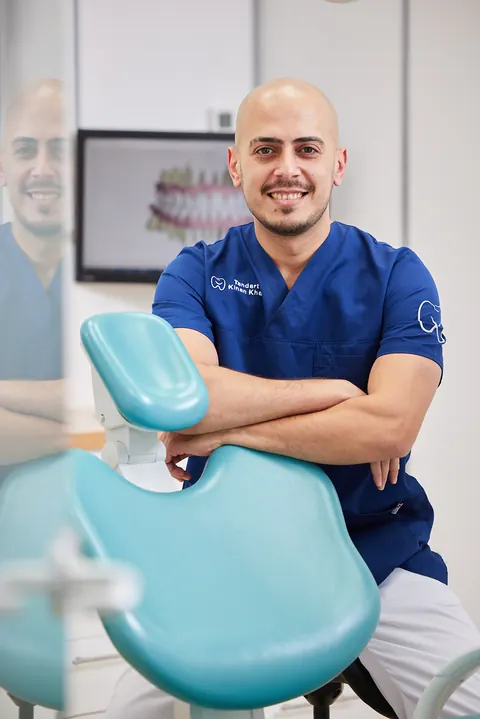
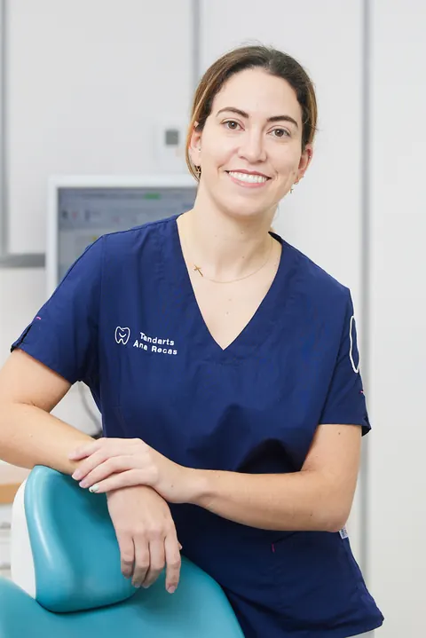
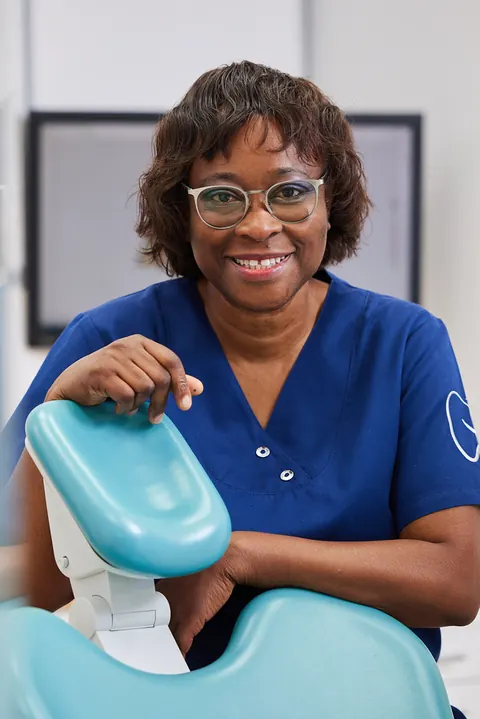
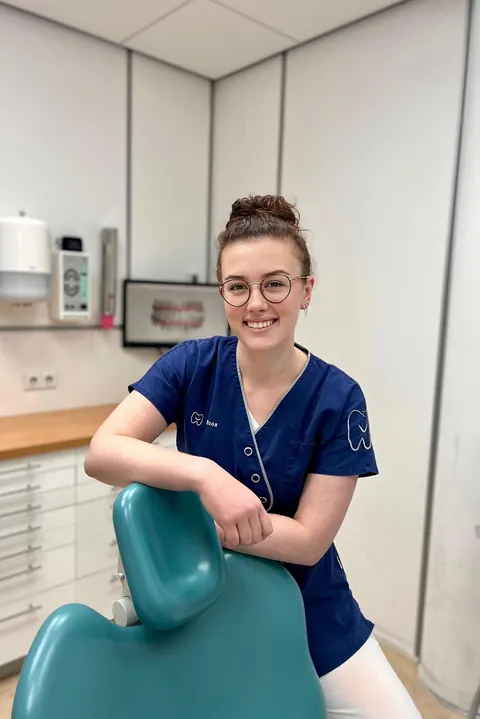
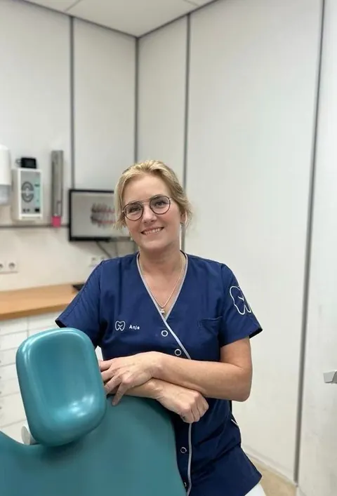
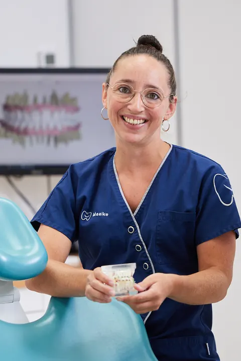
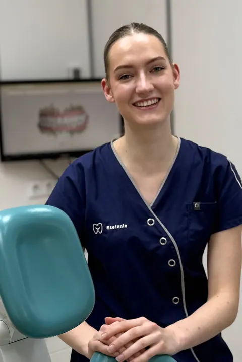
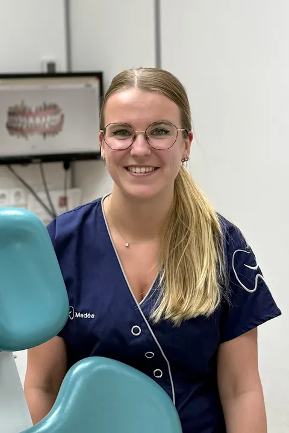
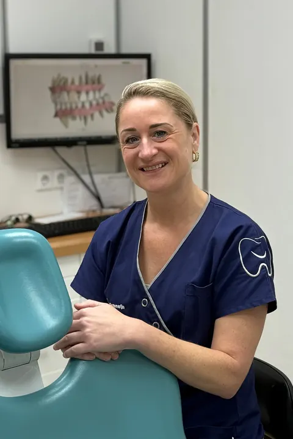
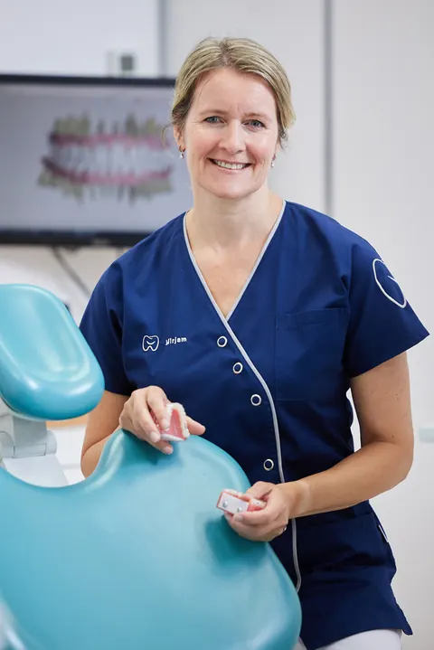
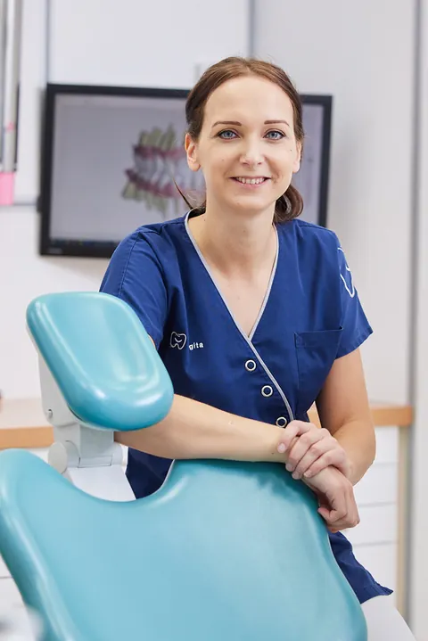
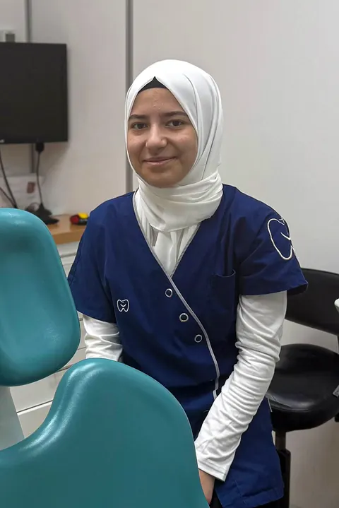
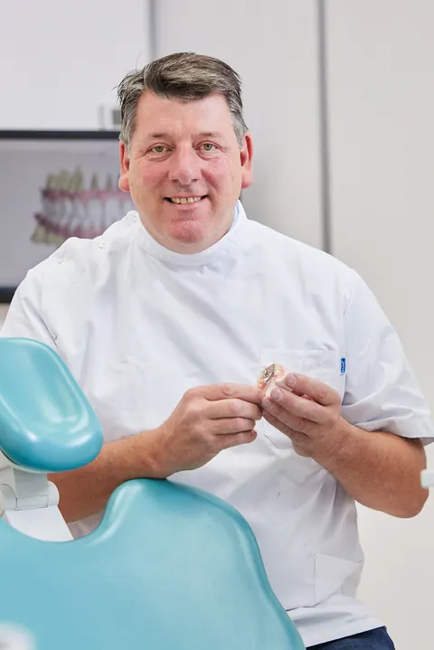
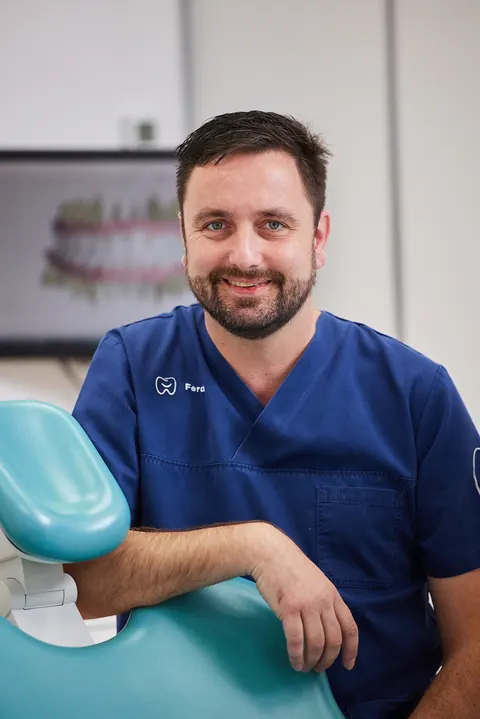
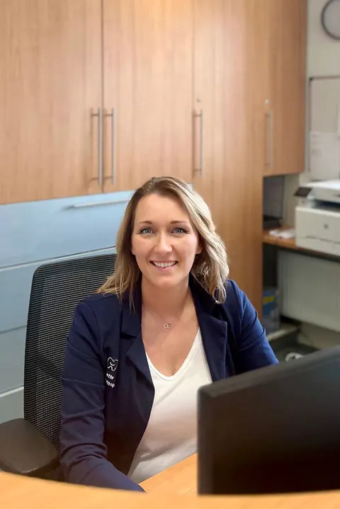
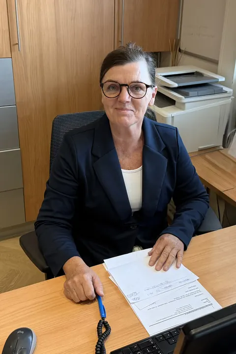
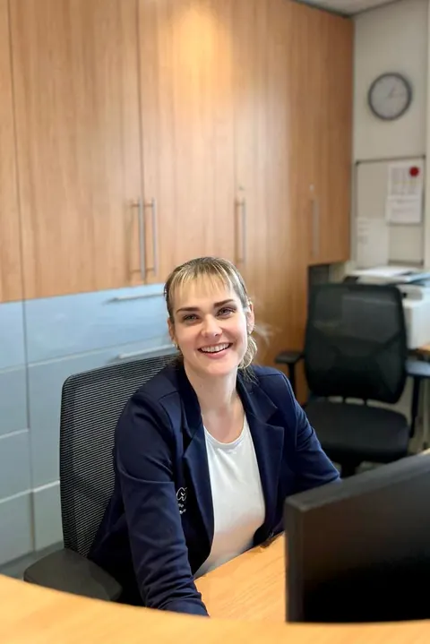
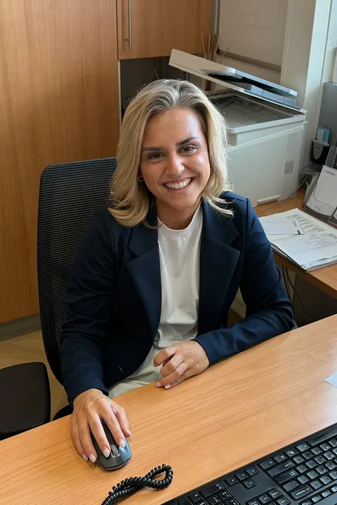
Nieuwe patiënten
Wij nemen weer nieuwe patiënten aan.
Schrijf u in
Vul het online formulier in. Heeft u nu een andere tandarts? Dan kunt u zich ook laten overschrijven.
U krijgt een uitnodiging
Nadat u zich heeft ingeschreven, nodigen we u uit voor een eerste consult.
Eerste consult
U vertelt wat uw wensen en klachten zijn. We bespreken uw medische vragenlijst, onderzoeken uw mond en maken digitale röntgenfoto’s.
4,5 van 5 gemiddeld in 48 Google-reviewsLees de reviews op Google
Veelgestelde vragen over onze praktijk in Hardenberg
Neemt Tandartspraktijk Badhuisplein nieuwe patiënten aan?
Ja, wij nemen weer nieuwe patiënten aan. Schrijf u online in, dan nodigen we u uit voor een eerste consult. Bent u patiënt bij een andere tandarts, dan kunt u zich ook laten overschrijven.
Hoe maak ik een afspraak bij de tandarts in Hardenberg?
Plan direct in onze online agenda of bel 0523-216967. Verplaatsen of afzeggen kan alleen telefonisch, minstens 48 uur van tevoren.
Wat zijn de openingstijden?
Maandag tot en met donderdag van 08:00 tot 12:00 en van 13:00 tot 16:30 uur. Vrijdag van 08:30 tot 12:30 en van 13:00 tot 16:30 uur.
Wat moet ik doen bij kiespijn of spoed?
Bel tijdens openingstijden 0523-216967, indien mogelijk tussen 08:30 en 10:00 uur. Buiten openingstijden kunt u terecht bij de Tandartsspoedpraktijk in Zwolle, telefoon 0900-8602.
Ik ben bang voor de tandarts. Kunt u mij helpen?
Ja. Sinds 2018 hebben we het keurmerk De Lieve Tandarts. We plannen zo nodig extra tijd in en leggen uit wat we doen. Een behandeling kan ook onder lachgas of onder narcose.
Waar zit de praktijk?
Aan het Badhuisplein 2 en 6 in Hardenberg. Ook als u in de omgeving woont, bijvoorbeeld in Gramsbergen, Bergentheim, Slagharen, Dedemsvaart of Ommen, bent u van harte welkom. Bekijk de route.
Contact en openingstijden
U vindt ons aan het Badhuisplein 2 en 6 in Hardenberg.
- Telefoon
- 0523-216967Tijdens onze openingstijden. Verplaatsen of afzeggen kan alleen telefonisch.
- Maandag08:00-12:0013:00-16:30
- Dinsdag08:00-12:0013:00-16:30
- Woensdag08:00-12:0013:00-16:30
- Donderdag08:00-12:0013:00-16:30
- Vrijdag08:30-12:3013:00-16:30
- ZaterdagGesloten
- ZondagGesloten
Gratis intake orthodontie
Invisalign, Spark of brackets: wat past bij u? Laat het ons weten, dan nemen wij contact met u op voor een gratis intake.
Pijn of spoed? Bel indien mogelijk tussen 08:30 en 10:00 uur, dan proberen we u dezelfde dag nog te helpen. Wat te doen buiten openingstijden
Badhuisplein 2 en 6, Hardenberg
De kaart wordt geladen via Google Maps. Daarbij kan Google gegevens verwerken.